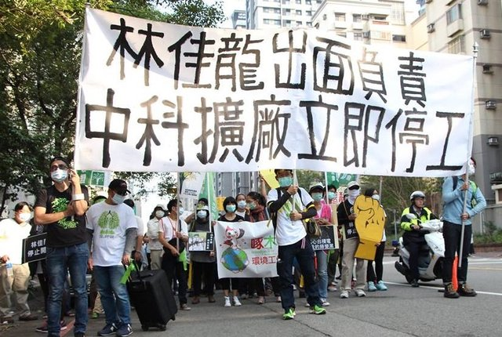

連署活動
反大肚山中科擴廠，需要你我的關注跟連署!
大肚山上53公頃的彈藥庫，是綠意盎然、生態豐富的森林，也是大肚僅存的大面積綠地。中科已經開始在此動工，帶來高汙染高耗能的科技廠。不僅毀掉一座森林，還會增加空氣汙染、水汙染、都市水泥化等等的嚴重問題! 然而不及格的環評在一片爭議之下強行過關，台中市政府也對這樣傷害台中人健康的災難默不作聲，身為台中市民，我們應該要站出來捍衛你我以及下一代的健康跟生存權益!
<公投連署書下載: https://goo.gl/0Z1IjD
此為長期作戰，時間不限。
歡迎大台中市民下載公投提案書，親筆詳細填載後將正本寄至下列任一地址：
台中市北區中清路１段852號 柯劭臻律師收
台中市西區台灣大道２段181號11樓1114號 台灣護樹協會收
台中市西屯區玉門路80巷1號 台灣生態學會收
台中市西區三民西路61號2樓 主婦聯盟台中分會收
因地方性公民投票案提案人數，應達提案時最近一次直轄市長選舉選舉人總數千分之五以上，公民投票案連署人數，應達提案時最近一次直轄市長選舉選舉人總數百分之五以上，公民投票 法第27條定有明文。經查2014台中市市長選舉人數2093689人，依此計算，提案人數須10500人、連署人數須達105000人。這次我們發起反對大肚山中科擴廠的公投案，是台中市有史以來第一個地方性公投，我們期待公民自決，將地方重大政策的複決權，還給市民。